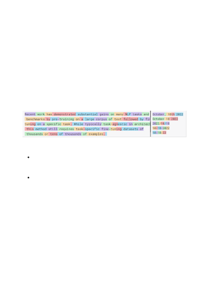
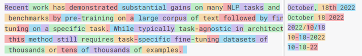

with ‘not found’ if the answer is not present". This can help the model avoid
generating false responses.
While the input size increases with each new generation of GPT models, there will
continue to be scenarios that provide more data than the model can handle. GPT
models break words into “tokens”. While common multi-syllable words are often a
single token, less common words are broken in syllables. Tokens can sometimes be
counter-intuitive, as shown by the example below which demonstrates token boundaries
for different date formats. In this case, spelling out the entire month is more space
efficient than a fully numeric date. The current range of token support goes from 2000
tokens with earlier GPT-3 models to up to 32,768 tokens with the 32k version of the
latest GPT-4 model.
Given this limited space, it is important to use it as efficiently as possible.
Tables – As shown in the examples in the previous section, GPT models can
understand tabular formatted data quite easily. This can be a space efficient way to
include data, rather than preceding every field with name (such as with JSON).
White Space – Consecutive whitespaces are treated as separate tokens which can
be an easy way to waste space. Spaces preceding a word, on the other hand, are
typically treated as part of the same token as the word. Carefully watch your usage
of whitespace and don’t use punctuation when a space alone will do.
Space efficiency
Next steps